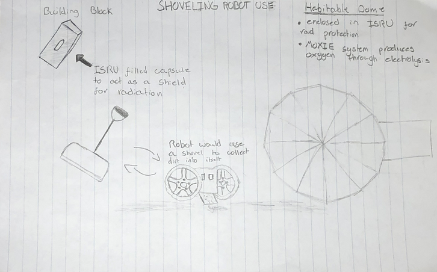

<div class="container-fluid bg-3 text-center">
</div>
<h1 style = "color:aliceblue">What are my final project considerations?</h1>
<p> My initial idea for my project came from seeing NASA's ideas for building igloos on mars using its dirt as a radiation shield</p>
<p>I quickly found out that Nasa already had developed a robot to perform this task which was called RASSOR</p>
<p>Regolith Advanced Surface Systems Operation Robot or RASSOR is teleoperated, meaning a human has to remote control it</p>

<p>In my version the building blocks will use ISRU or In-Situ Resource Utilization to protect from radiation</p>
<p>My main idea is to use a snow shovel-like design to shovel resources on Mars into the robot and have the robot operate on its own</p>
<p>Eventually, when all building brocks are filled up a habitable dome will be created which protects people from Mars's atmosphere</p>
<p>This would then allow NASA to install a MOXIE system or a Mars Oxygen In-Situ Resource Utilization</p>
<p>MOXIE would then produce oxygen for the habitat by using electrolysis to gather Oxygen from Mar's carbon based atmosphere</p>